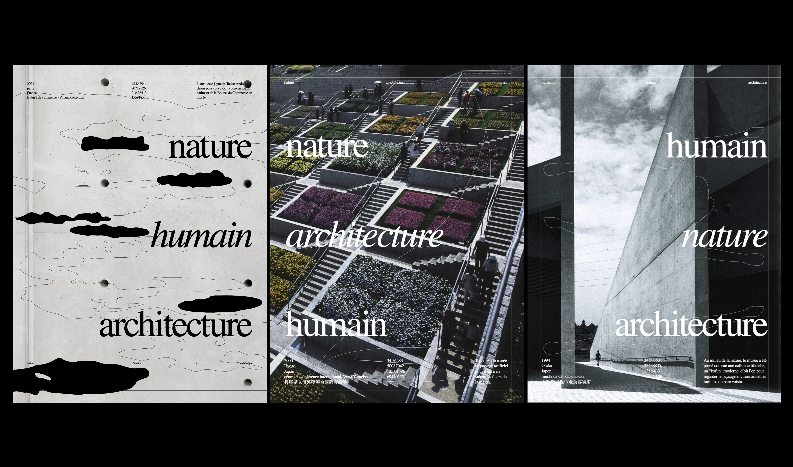

Coexistence : Tadao Ando
2022
Tadao Ando, Il toujours considère important sur l’harmonie entre ces trois éléments dans son travail.
J’ai interprété son concept de travail comme une coexistence. Entre la nature, l’expérience des gens
et l’architecture. À travers mon édition et mon travail, Le but de mon projet est d'expérimenter
et de comprendre le travail de lui. Ainsi, j’ai divisé la composition en trois catégories : la nature,
l’expérience et l’architecture et j’ai composé des photos et du texte par ce principe pour mon édition.





>